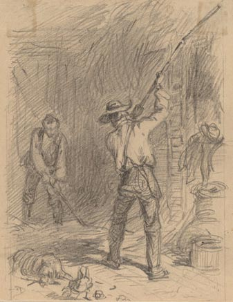

Actividades
Gran parte de asesoramiento ruptura es lo que NO hay que hacer: no te pongas en contacto con tu ex, no acechar a tu ex en línea (y definitivamente no en persona), trata de no obsesionarte con tu ex, etc. Pero además de mantener tu salud, ¿qué se supone que debes hacer entonces?
Después de una ruptura, todo el mundo experimenta un vacío enorme. No es sólo un vacío emocional, un agujero en el corazón... y es un agujero en tu horario: tienes una gran cantidad de tiempo libre adicional.
Es muy tentador querer llenar ese tiempo lamentándote, llorando y hablando de tu ex y la relación.
Todo el mundo hace eso, pero poco a poco hay que obligarse a sí mismo a vivir realmente por uno. Es tu vida ahora, 100% tuya y debes centrarse totalmente en ti. Suena a cliché, pero es muy cierto: nadie va a cuidar de ti más que a tu mismo. Ahora es el tiempo para amarte, cuidarte, seguir tus intereses, trabajar en ti mismo, hacerte una mejor persona, y vivir tu vida.
Así que concretamente, ¿qué hacer? Obviamente, depende de ti y de tus intereses, pero aquí hay un montón de ideas:
Lo más importante es tener cuidado de que tu "vida real" no se destruya. Trabajo, escuela, o lo que sea tu actividad principal en la vida... no dejes que se caiga a pedazos. 
Es muy, muy fácil adoptar una actitud de "no importa de todos modos, nada importa" después de una ruptura, y simplemente dejar que las cosas importantes en tu vida se desmoronen.
Lucha contra ese reflejo.
Va a ser muy difícil, pero debes mantenerte enfocado/a en tu trabajo, tu estudio y no dejar que tu vida se destruye por la ruptura.
Mantente ocupado/a con pasatiempos entretenidos, inicia otros nuevos. Pasar tiempo con los amigos es obvio, pero después de un período inicial de tristeza con ellos, trata de hacer cosas con ellos que son divertidas para ti: deportes, viajar, ir de compras, lo que sea. Por tu cuenta, puedes hacer un montón de cosas, así: tomar clases, hacer deporte, aprender nuevas habilidades, unirte a un club, viajes, artes y oficios.

Concéntrese en tu aspecto religioso y espiritual en la manera que sea bueno para ti. Haz una lista de las cosas que siempre quisiste hacer y decide cuales puedes empezar a hacer ahora. (Si se trata de cosas que no podías hacer porque estabas con tu ex, pues mucho mejor... ¡ahora eres libre para vivir para ti!)
Sé por experiencia personal que es muy difícil al principio ponerse todas las energías en lo que estás haciendo, pero es necesario que te fuerces y poco a poco tu enfoque en las actividades se agudizará y el dolor de la ruptura se aliviará.
Ayudar a los demás. En el período inmediatamente posterior a la ruptura, que no serás capaz de pensar en otra cosa que no sea tu ex y la relación. No importa lo que estás haciendo, la ruptura estará siempre en tu mente. Por lo tanto, puede parecer una locura incluso pensar en ayudar a los demás en un momento como este. Pero es una gran manera de ayudarte a ti mismo/a.
Haz lo que funcione para ti. Voluntariados locales - centro comunitario, iglesia, hospital, orfanato, refugio. O grupos internacionales como la Cruz Roja, Médicos sin Fronteras, Hábitat para la Humanidad.
Ayuda con grupos de niños. Enseñar una clase. Mentor de juventud en riesgo. Mejorar un parque local. Trabaja en un refugio de animales. Ayuda a tus propios familiares en necesidad. Los bancos de sangre, los museos, las bibliotecas, las cuestiones ambientales, Olimpiadas Especiales, fundaciones infantiles... la lista es interminable.
Respetar a los demás es muy terapéutico. Se centra la atención en lo que los demás necesitan, te hace ver que otras personas están sufriendo, y - a menudo - puede poner tu propio dolor en perspectiva. Te hace sentir necesario y apreciado por los demás, lo cual es muy importante después de una ruptura. Trabajas con otros voluntarios, lo cual es muy útil porque las personas que quieren ayudar a los demás son exactamente el tipo de personas de las que deseas rodearte cuando estás deprimido.
Y en muchas (¿todas?) situaciones en las que estás cuidando a los demás, tu propio dolor de ruptura parece tan pequeña en el panorama de la vida... lo cual es bueno, porque poco a poco te darás cuenta de que este es realmente el caso.

Cadena de favores. Una conclusión a la idea anterior de "Ayudar a otros", es ayudar a la gente en los foros de Internet con sus propios problemas de ruptura, esto también te ayudará.
Es muy difícil - imposible, en realidad - el ver tu situación con claridad después de la ruptura, pero me di cuenta de que el análisis de las situaciones de los demás era mucho más fácil... y me hizo empezar a darme cuenta de que mi propia situación no era tan única o compleja después de todo.